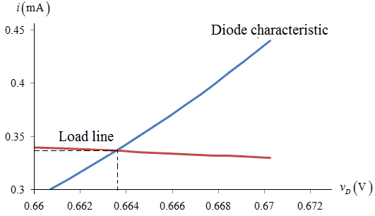

Refer to Figure 4.10 in the text book.
Consider the value of n is,
Consider the diode current is much greater than  , and the diode characteristic by the exponential relationship is,
, and the diode characteristic by the exponential relationship is,
Substitute , and  in equation.
in equation.
…… (1)
Refer to Figure 4.10 in the text book.
Consider the value of n is,
Consider the diode current is much greater than , and the diode characteristic by the exponential relationship is,
Substitute , and in equation.
…… (1)
Apply Kirchhoff’s voltage law.
Substitute , and in equation.
…… (2)
Calculate small number of points on the diode characteristics in the vicinity.
Varying diode voltage form , the corresponding diode currentvalues are:
form , the corresponding diode currentvalues are:
Substitute in equation (1).
So the diode current is approximately zero.
Substitute in equation (1).
So the diode current is approximately zero.
Substitute in equation (1).

So the diode current is approximately zero.
Substitute in equation (1).
Substitute in equation-(2).

 .
.
Substitute in equation-(2)
The graphical representation of diode characteristics and load line is shown in Figure 1.

Figure 1
From Figure 1, the operating point must lie between and corresponding diode currents are and .
and .
Consider the diode voltage equation.
…… (3)
Substitute , and in equation.
Substitute in equation-(3).
Substitute in equation-(3).
| | | Load line |
| 0.3 | 0.660676 | 0.339324 |
| 0.31 | 0.661496 | 0.338504 |
| 0.32 | 0.66229 | 0.33771 |
| 0.33 | 0.663059 | 0.336941 |
| 0.34 | 0.663805 | 0.336195 |
| 0.35 | 0.66453 | 0.33547 |
| 0.36 | 0.665234 | 0.334766 |
| 0.37 | 0.665919 | 0.334081 |
| 0.38 | 0.666586 | 0.333414 |
| 0.39 | 0.667235 | 0.332765 |
| 0.4 | 0.667868 | 0.332132 |
Table 1
The graphical representation of diode characteristics and load line plot is shown in Figure 2

Figure 2
From Figure 2, the operating voltage and corresponding diode current  is
is  .
.
Consider the diode voltage equation.
Substitute  ,
, , and
, and  in equation (3).
in equation (3).
Therefore, the operating voltage and corresponding diode current  is .
is .
The difference between obtained  value and graphical representation
value and graphical representation  value is
value is
Therefore, difference voltage value is .